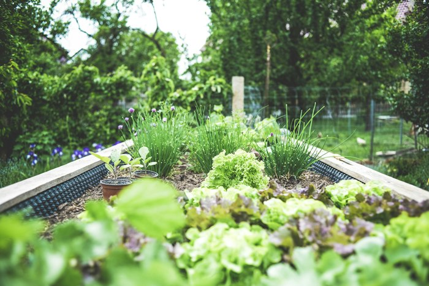
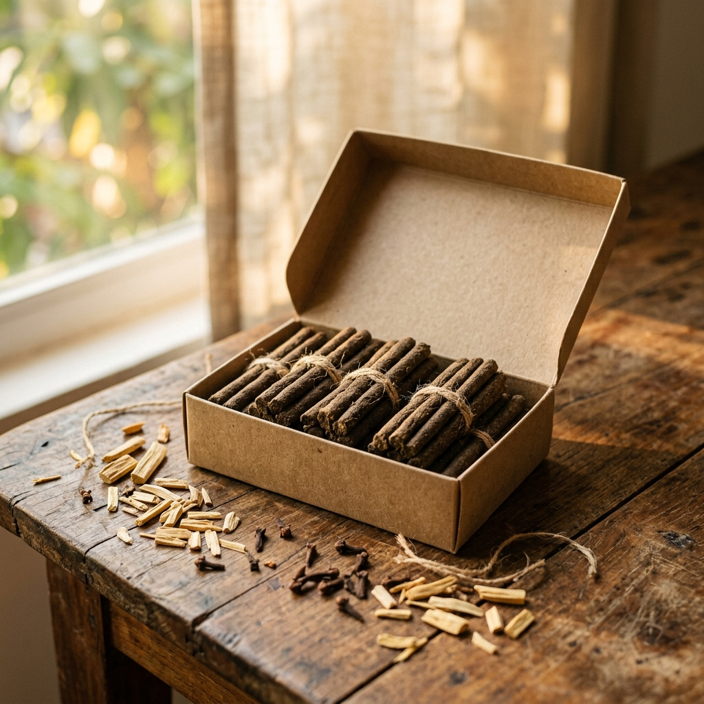
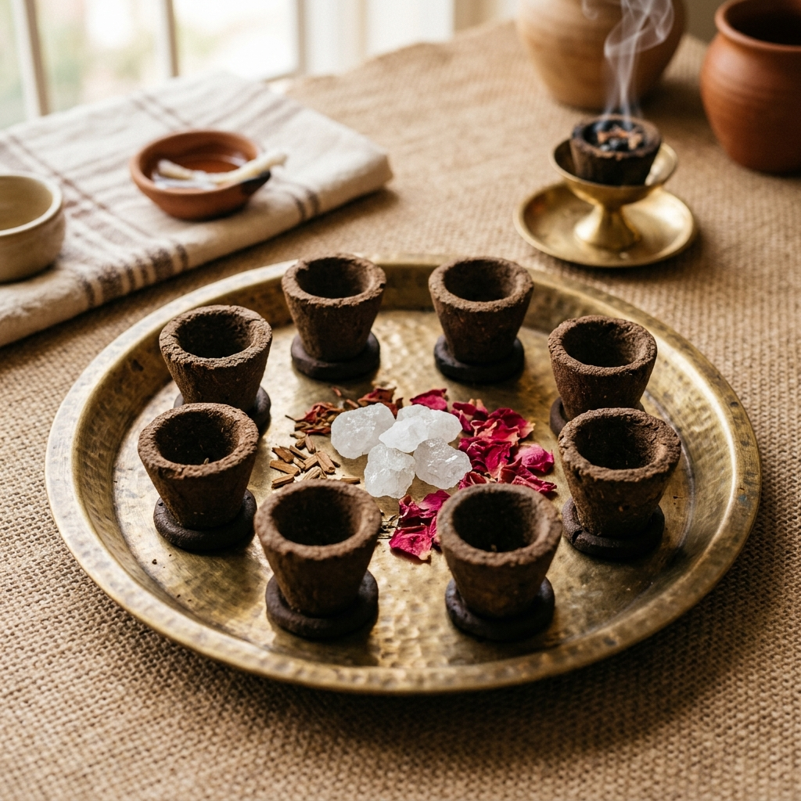
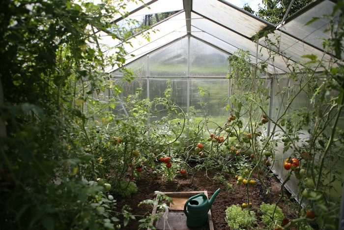
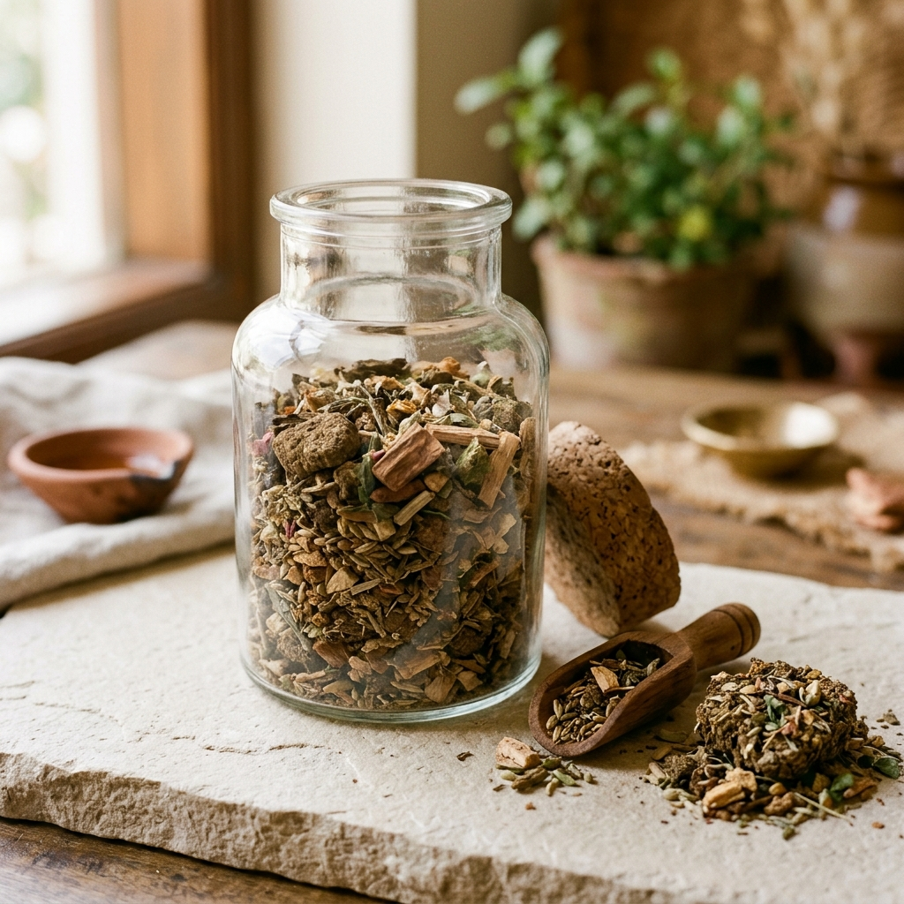
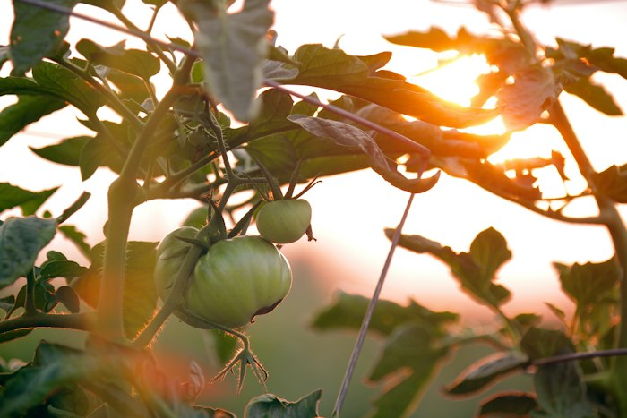
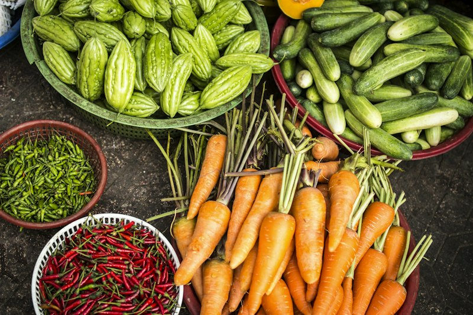

Aged Cow Dung Manure
Sun-dried & sieved · 5 kg
₹199
Explore 100% pure cow-dung manures, vermicomposts, and organic plant boosters.

Sun-dried & sieved · 5 kg
Hand-rolled bamboo-less · 40 sticks

Earthworm-enriched · 5 kg

Guggal & neem blend · 25 sticks

Fermented bio-liquid · 1 L

Pure loban-filled cups · 12 pcs

Hand-pressed & sun-cured · 12 pcs

Aromatic pooja blend · 250 g

Microbial cow-dung elixir · 1 L

Cow dung & cocopeat · 10 kg

Natural pest & soil guard · 5 kg
Pure desi gobar & herbs · 30 cones
Demo products and prices. Connect a store backend for real orders.